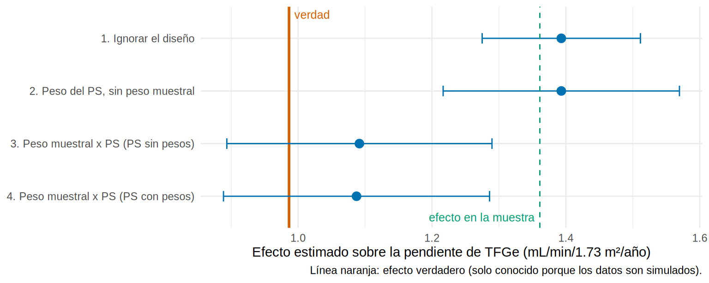
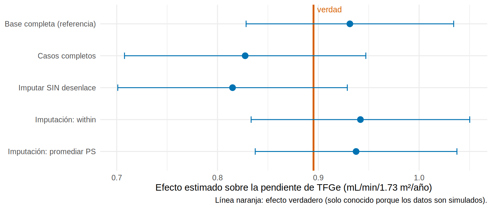
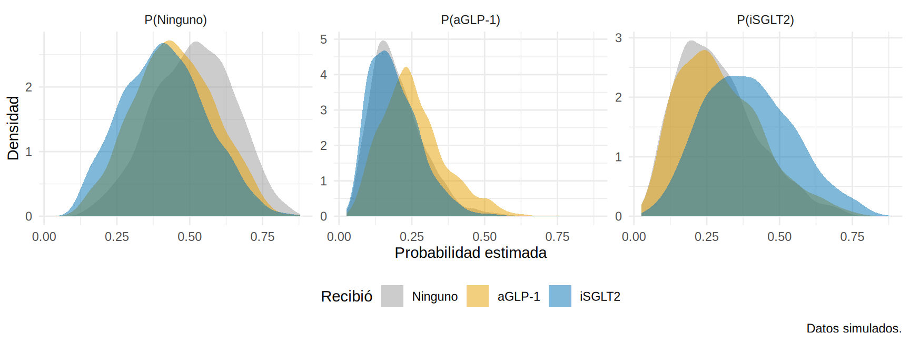
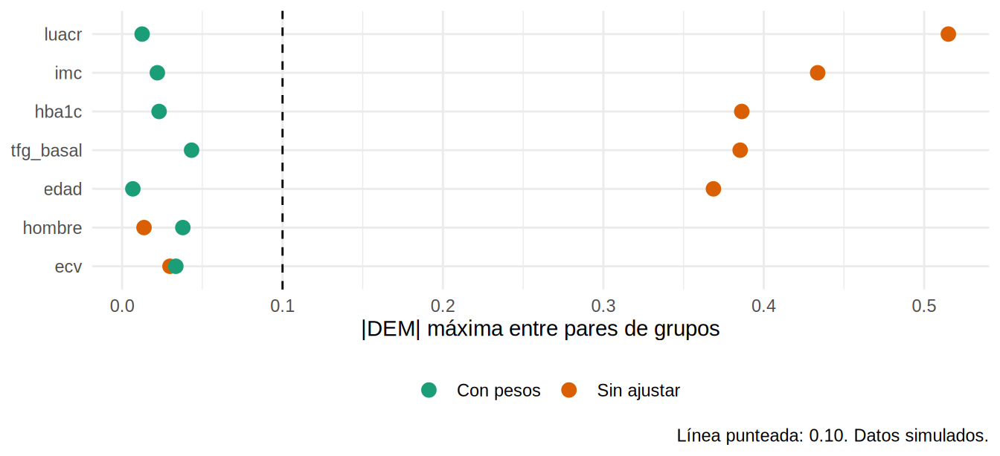
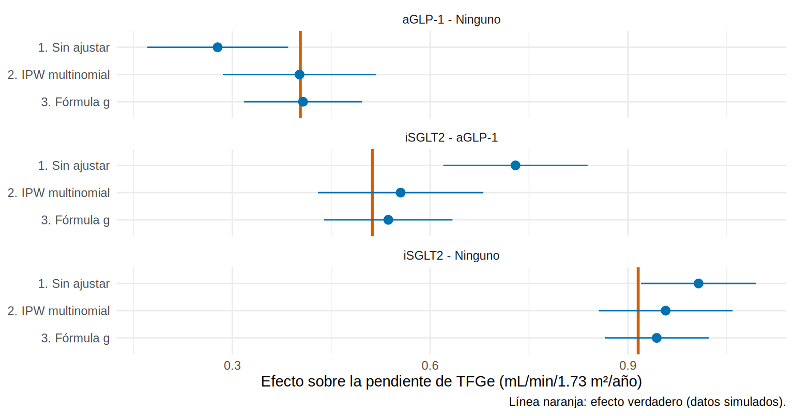

library(tidyverse)
library(survey)
library(mice)
library(mitools)
library(sandwich)
library(nnet)
library(marginaleffects)
source("R/funciones_epi.R")
source("R/funciones_extra_cap1213.R")
source("R/simular_encuesta_erc.R")
source("R/simular_cap1210.R")
source("R/funciones_cap1210.R")
f2 <- \(x) sprintf("%.2f", x)Puntaje de propensión con encuestas, datos faltantes y más de dos tratamientos
Nota🩺 Escenario
Tres situaciones que arruinan el PS “de manual”. (1) Quieres el efecto del iSGLT2 en toda la región, pero tus datos vienen de una encuesta que sobremuestreó las zonas rurales, con pesos y comunidades. (2) En tu cohorte falta la UACR en un tercio de los pacientes, y faltan más justo en quienes evolucionan peor. (3) Tus pacientes no eligen entre dos opciones sino entre tres: nada, un aGLP-1 o un iSGLT2. En los tres casos el PS sigue siendo la herramienta, pero hay que adaptarlo.
Este subcapítulo asume que ya conoces el PS (12.3), el emparejamiento (12.4) y la ponderación (12.5). Para el diseño muestral te remitimos al Cap. 6.3 y para la imputación al Cap. 13.4-13.5. Las tres secciones son independientes y cada una tiene verdad conocida y sin confusión no medida: si un método falla, el culpable es el método.
Lo que vamos a hacer
- Encuestas: qué población representa el efecto y cómo combinar el peso muestral con el peso del PS.
- Faltantes: estimar el PS dentro de cada base imputada (within) o promediarlo, frente a casos completos.
- Tres niveles: PS multinomial, pesos generalizados, balance entre varios grupos y efectos por pares.
Parte 1. PS con una encuesta de diseño complejo
Paso 1: ¿qué efecto quieres, el de la muestra o el de la población?
enc <- read_csv("Bases/ps_encuesta_erc.csv", show_col_types = FALSE) # encuesta simulada
pob <- simular_poblacion_ps() # la región completa (solo en simulación)Nuestra encuesta (simulada) tiene 2 400 adultos con diabetes y ERC de 60 comunidades: 20 urbanas y 40 rurales. Las zonas rurales están sobremuestreadas: son el 67 % de la muestra y el 31 % de la región. Además, el iSGLT2 beneficia más en las zonas rurales. Como conocemos toda la región, calculamos los efectos verdaderos:
pate <- mean(pob$ite) # efecto verdadero en la POBLACIÓN
sate <- mean(pob$ite[match(enc$id, pob$id)]) # efecto verdadero en las personas de la MUESTRA
c(urbano = mean(pob$ite[pob$area == "Urbano"]), rural = mean(pob$ite[pob$area == "Rural"]),
poblacion = pate, muestra = sate) |> round(2) urbano rural poblacion muestra
0.71 1.62 0.99 1.36 Qué vemos: el efecto de la población es 0.99 mL/min/1.73 m²/año, pero el de las personas encuestadas es 1.36: la muestra tiene demasiada gente rural, donde el efecto es mayor. Un análisis que ignore el diseño responde a la pregunta sobre esta muestra; para hablar de la región hay que usar los pesos. Esto es el PATE (efecto en la población) frente al SATE (efecto en la muestra).
Paso 2: dos formas de usar los pesos muestrales
El peso muestral (peso) dice a cuántos adultos representa cada encuestado. Hay dos decisiones, que conviene separar:
- ¿Entra el peso muestral en el modelo del PS? Dos opciones habituales: PS sin pesos (logística común) o PS con pesos (
svyglm, que estima el PS de la población). - ¿Entra en el análisis del desenlace? Sí, siempre, si quieres el efecto poblacional. El peso final es el producto: \(w_i = \text{peso muestral}_i \times \text{peso del PS}_i\).
f_ps <- isglt2 ~ I(edad / 10) + sexo + tfg + luacr + area
dis <- svydesign(ids = ~cluster, strata = ~area, weights = ~peso, data = enc, nest = TRUE)
enc$ps_sin <- fitted(glm(f_ps, data = enc, family = binomial)) # PS sin pesos muestrales
enc$ps_con <- fitted(svyglm(f_ps, design = dis, family = quasibinomial)) # PS con pesos muestrales
enc <- enc |> mutate(w_sin = peso_ipw(ps_sin, isglt2), w_con = peso_ipw(ps_con, isglt2))Ahora el efecto con cuatro análisis. El primero ignora el diseño (el “feo”); el segundo usa solo el peso del PS pero sí declara conglomerados; el tercero y el cuarto multiplican por el peso muestral:
fit_ing <- lm(pendiente_tfg ~ isglt2, data = enc, weights = w_sin)
ee_ing <- sqrt(vcovHC(fit_ing, "HC1")["isglt2", "isglt2"])
res_enc <- bind_rows(
tibble(metodo = "1. Ignorar el diseño", estimado = coef(fit_ing)[["isglt2"]], ee = ee_ing,
ic_inf = estimado - 1.96 * ee, ic_sup = estimado + 1.96 * ee),
efecto_diseno(enc, enc$w_sin) |> mutate(metodo = "2. Peso del PS, sin peso muestral"),
efecto_diseno(enc, enc$peso * enc$w_sin) |> mutate(metodo = "3. Peso muestral x PS (PS sin pesos)"),
efecto_diseno(enc, enc$peso * enc$w_con) |> mutate(metodo = "4. Peso muestral x PS (PS con pesos)")
)
res_enc |> mutate(across(where(is.numeric), \(x) round(x, 2)))# A tibble: 4 × 5
metodo estimado ee ic_inf ic_sup
<chr> <dbl> <dbl> <dbl> <dbl>
1 1. Ignorar el diseño 1.39 0.06 1.27 1.51
2 2. Peso del PS, sin peso muestral 1.39 0.09 1.22 1.57
3 3. Peso muestral x PS (PS sin pesos) 1.09 0.1 0.89 1.29
4 4. Peso muestral x PS (PS con pesos) 1.09 0.1 0.89 1.29grafico_estimaciones(res_enc, pate) +
geom_vline(xintercept = sate, linetype = "dashed", color = "#009E73") +
annotate("text", x = sate, y = 0.6, label = "efecto en la muestra", color = "#009E73", hjust = 1.05, size = 3.3)
Qué vemos: los análisis 1 y 2 caen sobre el efecto de la muestra (1.39 y 1.39; línea verde discontinua), no sobre el poblacional (0.99). Los análisis 3 y 4, con el peso muestral, dan 1.09 y 1.09, y sus IC contienen el valor verdadero. También cambia el error estándar: 0.06 si ignoras el diseño y 0.10 con conglomerados y estratos (1.65 veces mayor). Ignorar el diseño da un IC más estrecho y para la pregunta equivocada.
Paso 3: ¿es azar o es sesgo? Repetir la encuesta
Una sola muestra puede salir lejos o cerca por casualidad. Repetimos la encuesta 100 veces (misma región, otras comunidades) y promediamos:
una_encuesta <- function(s) {
m <- muestrear_bietapico(pob, conglom = c(Urbano = 20, Rural = 40), por_cluster = 40, semilla = s) |>
select(-all_of(cols_oraculo_ps))
dis_s <- svydesign(ids = ~cluster, strata = ~area, weights = ~peso, data = m, nest = TRUE)
w_s <- peso_ipw(fitted(glm(f_ps, data = m, family = binomial)), m$isglt2)
w_c <- peso_ipw(fitted(svyglm(f_ps, design = dis_s, family = quasibinomial)), m$isglt2)
b <- \(w) coef(lm(pendiente_tfg ~ isglt2, data = m, weights = w))[["isglt2"]]
c(`1. Ignorar el diseño` = b(w_s), `3. Peso muestral x PS (PS sin pesos)` = b(m$peso * w_s),
`4. Peso muestral x PS (PS con pesos)` = b(m$peso * w_c))
}
rep_enc <- map_dfr(1:100, \(s) as.list(una_encuesta(s)))
tibble(metodo = names(rep_enc), media = colMeans(rep_enc), de = apply(rep_enc, 2, sd)) |>
mutate(sesgo_vs_poblacion = media - pate, across(where(is.numeric), \(x) round(x, 2)))# A tibble: 3 × 4
metodo media de sesgo_vs_poblacion
<chr> <dbl> <dbl> <dbl>
1 1. Ignorar el diseño 1.31 0.08 0.32
2 3. Peso muestral x PS (PS sin pesos) 0.98 0.11 -0.01
3 4. Peso muestral x PS (PS con pesos) 0.98 0.11 -0.01Qué vemos: ignorar el diseño sobreestima el efecto poblacional de forma sistemática (media 1.31 frente a 0.99). Con el peso muestral, las dos versiones son prácticamente insesgadas (0.98 y 0.98) y entre ellas no hay diferencia apreciable aquí: el modelo del PS ya incluye el área, la variable de diseño. Lo que no es opcional es el peso muestral en el análisis final.
Paso 4: subpoblaciones, subset() sobre el diseño
¿Y el efecto en mayores de 70 años? Igual que en el Cap. 6.3: se filtra el diseño, no la base. El PS se estima con toda la muestra (más información) y el diseño se recorta después:
enc <- enc |> mutate(w_final = peso * w_con)
dis_f <- svydesign(ids = ~cluster, strata = ~area, weights = ~w_final, data = enc, nest = TRUE)
sub_ok <- svyglm(pendiente_tfg ~ isglt2, subset(dis_f, edad >= 70)) # correcto
dis_mal <- svydesign(ids = ~cluster, strata = ~area, weights = ~w_final, nest = TRUE,
data = filter(enc, edad >= 70)) # lo que NO se debe hacer
sub_mal <- svyglm(pendiente_tfg ~ isglt2, dis_mal)
tibble(analisis = c("subset() del diseño", "Filtrar la base", "Verdad (región)"),
estimado = c(coef(sub_ok)[["isglt2"]], coef(sub_mal)[["isglt2"]], mean(pob$ite[pob$edad >= 70])),
ee = c(SE(sub_ok)[["isglt2"]], SE(sub_mal)[["isglt2"]], NA)) |> mutate(across(where(is.numeric), \(x) round(x, 3)))# A tibble: 3 × 3
analisis estimado ee
<chr> <dbl> <dbl>
1 subset() del diseño 0.917 0.129
2 Filtrar la base 0.917 0.129
3 Verdad (región) 0.942 NA Qué vemos: el efecto en mayores de 70 años es 0.92 (verdad 0.94), con un EE de 0.129. Aquí filtrar la base da casi lo mismo (EE 0.129) porque hay mayores de 70 años en 60 de las 60 comunidades. No es una garantía: con subgrupos raros, filtrar la base cambia el EE y a veces R ni puede calcular la varianza. Por eso la regla es siempre subset() sobre el diseño.
Con los paquetes WeightIt y cobalt (código no verificado en el entorno de pruebas del libro; el análisis anterior es la versión propia ejecutable):
library(WeightIt); library(cobalt)
w_enc <- weightit(isglt2 ~ I(edad / 10) + sexo + tfg + luacr + area, data = enc,
method = "glm", estimand = "ATE", s.weights = "peso") # s.weights: peso muestral
bal.tab(w_enc, un = TRUE, thresholds = c(m = 0.1)) # balance ponderado
enc$w_wi <- enc$peso * w_enc$weights # peso final = muestral x PS
dis_wi <- svydesign(ids = ~cluster, strata = ~area, weights = ~w_wi, data = enc, nest = TRUE)
svyglm(pendiente_tfg ~ isglt2, dis_wi)Parte 2. PS con imputación múltiple
Paso 5: una cohorte con faltantes que dependen del desenlace
Cohorte simulada de 3 000 pacientes (sin confusión no medida). Con un mecanismo MAR, la UACR falta en un tercio y la HbA1c en cerca de un 10 % (cifras exactas abajo): la falta depende de edad, TFGe, tratamiento y del propio desenlace (falta más en los tratados y en quienes evolucionan peor). Conocemos el ATE verdadero y, además, el análisis con la base completa (la referencia que una base con faltantes intenta alcanzar):
comp <- simular_ps_completa() # base completa (oráculo)
dat <- con_faltantes(comp) |> select(-id, -ite) |> mutate(sexo = factor(sexo))
comp <- comp |> mutate(sexo = factor(sexo))
f_ps2 <- isglt2 ~ I(edad / 10) + sexo + hba1c + tfg_basal + luacr + ecv
ate2 <- mean(comp$ite)
ref <- ipw_una_base(comp, f_ps2) # IPW con la base completa
cc <- ipw_una_base(na.omit(dat), f_ps2) # IPW con casos completos
c(faltan_luacr = mean(is.na(dat$luacr)), faltan_hba1c = mean(is.na(dat$hba1c)),
pacientes_completos = nrow(na.omit(dat)) / nrow(dat)) |> round(2) faltan_luacr faltan_hba1c pacientes_completos
0.36 0.11 0.59 Con casos completos quedan 1 760 pacientes y el ATE sale en 0.83; con la base completa, 0.93; la verdad es 0.90. Los casos completos no son una muestra al azar: entre ellos el 48 % está tratado (en toda la cohorte, el 45 %) y su pendiente media es -1.45 (en toda la cohorte, -1.98).
Paso 6: imputar con el tratamiento y el desenlace (y el “feo” sin desenlace)
El modelo de imputación debe contener todo lo que usarás después: el tratamiento, el desenlace y los confusores. Por defecto, mice usa todas las columnas como predictores; aquí lo hacemos explícito para poder quitar el desenlace y ver qué pasa:
pm <- make.predictorMatrix(dat) # todos predicen a todos (incluye isglt2 y pendiente_tfg)
imp <- mice(dat, m = 20, maxit = 10, method = "pmm", predictorMatrix = pm, printFlag = FALSE, seed = 1)
pm0 <- pm; pm0[, "pendiente_tfg"] <- 0 # el "feo": el desenlace NO ayuda a imputar
imp0 <- mice(dat, m = 20, maxit = 10, method = "pmm", predictorMatrix = pm0, printFlag = FALSE, seed = 1)Paso 7: enfoque within, el PS dentro de cada imputación
El orden del Cap. 13.5: (1) imputar \(m\) bases; (2) en cada base, estimar el PS, ponderar y estimar el efecto; (3) combinar las \(m\) estimaciones con las reglas de Rubin. Usamos ipw_una_base() (ver R/funciones_cap1210.R), que devuelve el estimado y su varianza robusta, y mitools::MIcombine() para combinar:
combinar <- function(imputacion) {
res <- map(complete(imputacion, "all"), ipw_una_base, formula_ps = f_ps2) # PS + pesos + efecto en cada base
mi <- MIcombine(map(res, "estimado"), map(res, "varianza")) # reglas de Rubin
list(res = res, estimado = coef(mi)[[1]], ee = sqrt(vcov(mi)[1, 1]))
}
within <- combinar(imp)
sin_y <- combinar(imp0)
por_base <- map_dbl(within$res, "estimado") # un ATE por cada base imputada
c(within = within$estimado, ee = within$ee, minimo_base = min(por_base), maximo_base = max(por_base)) |> round(3) within ee minimo_base maximo_base
0.942 0.055 0.897 0.961 Cada una de las 20 bases da un ATE algo distinto (de 0.90 a 0.96). Rubin los combina y suma esa variación entre bases al error estándar. Con mice el equivalente es pool(), pero con una restricción importante:
Advertencia⚠️
with(imp, ...) no ve una fórmula guardada fuera
Si escribes la fórmula en un objeto y la pasas a with(), falla, porque la fórmula “recuerda” el entorno global y no las columnas de cada base imputada. La fórmula debe ir dentro de la llamada, o usa una función aplicada a complete(imp, "all") como arriba.
f_externa <- isglt2 ~ I(edad / 10) + luacr
with(imp, glm(f_externa, family = binomial)) # fallaError in eval(predvars, data, env): object 'isglt2' not foundres_ok <- with(imp, glm(isglt2 ~ I(edad / 10) + luacr, family = binomial)) # fórmula inline: funciona
class(res_ok)[1] "mira" "matrix"Paso 8: enfoque “promediar el PS”
La alternativa es estimar el PS en cada base, promediarlo por paciente y hacer un solo análisis con ese PS promedio:
ps_prom <- Reduce(`+`, map(within$res, "ps")) / length(within$res) # PS promedio por paciente
promedio <- ipw_una_base(complete(imp, 1), f_ps2, ps = ps_prom) # un solo análisis (la base 1)Su error estándar sale de un solo análisis y no recoge la incertidumbre de la imputación (Rubin sí).
Paso 9: comparar todo con la verdad
res_mi <- tibble(
metodo = c("Base completa (referencia)", "Casos completos", "Imputar SIN desenlace", "Imputación: within", "Imputación: promediar PS"),
estimado = c(ref$estimado, cc$estimado, sin_y$estimado, within$estimado, promedio$estimado),
ee = sqrt(c(ref$varianza, cc$varianza, sin_y$ee^2, within$ee^2, promedio$varianza))
) |> mutate(ic_inf = estimado - 1.96 * ee, ic_sup = estimado + 1.96 * ee)
grafico_estimaciones(res_mi, ate2)
res_mi |> mutate(across(where(is.numeric), \(x) round(x, 3)))# A tibble: 5 × 5
metodo estimado ee ic_inf ic_sup
<chr> <dbl> <dbl> <dbl> <dbl>
1 Base completa (referencia) 0.931 0.053 0.828 1.03
2 Casos completos 0.827 0.061 0.708 0.947
3 Imputar SIN desenlace 0.815 0.058 0.701 0.929
4 Imputación: within 0.942 0.055 0.833 1.05
5 Imputación: promediar PS 0.937 0.051 0.837 1.04 Qué vemos: within (0.94) y promediar el PS (0.94) quedan cerca de la referencia (0.93) y de la verdad (0.90). Los casos completos (0.83) y, sobre todo, imputar sin el desenlace (0.81) se alejan. El error estándar de within (0.055) es mayor que el de promediar (0.051), como debe ser: suma la incertidumbre de imputar.
Una sola base puede engañar (la referencia misma no coincide con la verdad: es una muestra). Repetimos la cohorte 40 veces, con m = 5 imputaciones para ir rápido:
una_cohorte <- function(s) {
cm <- simular_ps_completa(semilla = s) |> mutate(sexo = factor(sexo))
d <- con_faltantes(cm, semilla = s + 500) |> select(-id, -ite)
pm1 <- make.predictorMatrix(d); pm2 <- pm1; pm2[, "pendiente_tfg"] <- 0
i1 <- complete(mice(d, m = 5, maxit = 5, method = "pmm", predictorMatrix = pm1, printFlag = FALSE, seed = s), "all")
i2 <- complete(mice(d, m = 5, maxit = 5, method = "pmm", predictorMatrix = pm2, printFlag = FALSE, seed = s), "all")
ps <- Reduce(`+`, map(i1, \(b) ipw_una_base(b, f_ps2)$ps)) / 5
c(verdad = mean(cm$ite), `Base completa` = ipw_una_base(cm, f_ps2)$estimado,
`Casos completos` = ipw_una_base(na.omit(d), f_ps2)$estimado,
`Imputar SIN desenlace` = mean(map_dbl(i2, \(b) ipw_una_base(b, f_ps2)$estimado)),
`Within` = mean(map_dbl(i1, \(b) ipw_una_base(b, f_ps2)$estimado)),
`Promediar PS` = ipw_una_base(i1[[1]], f_ps2, ps = ps)$estimado)
}
rep_mi <- map_dfr(1:40, \(s) as.list(una_cohorte(s)), .progress = FALSE)
tibble(metodo = names(rep_mi)[-1], media = colMeans(rep_mi[-1]), de = apply(rep_mi[-1], 2, sd),
sesgo = colMeans(rep_mi[-1]) - mean(rep_mi$verdad)) |> mutate(across(where(is.numeric), \(x) round(x, 3)))# A tibble: 5 × 4
metodo media de sesgo
<chr> <dbl> <dbl> <dbl>
1 Base completa 0.902 0.047 0.001
2 Casos completos 0.828 0.061 -0.073
3 Imputar SIN desenlace 0.817 0.047 -0.083
4 Within 0.907 0.05 0.006
5 Promediar PS 0.907 0.049 0.007Qué vemos: en promedio, la base completa, within y promediar el PS están a menos de 0.01 de la verdad; los casos completos sesgan -0.07 y la imputación sin desenlace -0.08. Entre within y promediar el PS no hay diferencia en el punto en este escenario sencillo; lo que sí cambia es el error estándar (en la cohorte de arriba, 0.055 frente a 0.051). Leyrat y colaboradores (2019) compararon ambos enfoques con simulaciones y recomiendan within, que además es el que respeta las reglas de Rubin. (Con el paquete MatchThem, weightthem() automatiza el flujo within; ver Cap. 13.5.)
Parte 3. Tres niveles de exposición
Paso 10: el PS multinomial
Con tres grupos (Ninguno, aGLP-1, iSGLT2) cada paciente tiene tres probabilidades que suman 1: \(e_k(X) = P(A = k \mid X)\). Se estiman con una regresión logística multinomial (nnet::multinom; VGAM::vglm da lo mismo). Simulamos 4 000 pacientes (datos simulados) con efectos distintos para cada fármaco:
d3 <- simular_tres_trat() |> mutate(sexo = factor(sexo), hombre = as.integer(sexo == "Hombre"))
verdad3 <- c(`aGLP-1 - Ninguno` = mean(d3$y_glp1 - d3$y_ninguno), `iSGLT2 - Ninguno` = mean(d3$y_isglt2 - d3$y_ninguno),
`iSGLT2 - aGLP-1` = mean(d3$y_isglt2 - d3$y_glp1))
f_ps3 <- trat ~ I(edad / 10) + sexo + imc + hba1c + tfg_basal + luacr + ecv
m_multi <- multinom(f_ps3, data = d3, trace = FALSE, maxit = 500)
P <- predict(m_multi, type = "probs") # matriz n x 3: P(Ninguno), P(aGLP-1), P(iSGLT2)
round(verdad3, 2) # efectos verdaderos por pares (solo en simulación)aGLP-1 - Ninguno iSGLT2 - Ninguno iSGLT2 - aGLP-1
0.40 0.92 0.51 table(d3$trat)
Ninguno aGLP-1 iSGLT2
1868 839 1293 Paso 11: solapamiento con tres grupos
La positividad se mira nivel por nivel: para cada una de las tres probabilidades, los tres grupos deberían tener representantes en todo el rango.
as_tibble(P) |> mutate(recibio = d3$trat) |>
pivot_longer(-recibio, names_to = "probabilidad_de", values_to = "p") |>
mutate(probabilidad_de = factor(paste0("P(", probabilidad_de, ")"), paste0("P(", levels(d3$trat), ")"))) |>
ggplot(aes(p, fill = recibio)) +
geom_density(alpha = 0.5, color = NA) +
facet_wrap(~probabilidad_de, scales = "free_y") +
scale_fill_manual(values = c(Ninguno = "#999999", `aGLP-1` = "#E69F00", iSGLT2 = "#0072B2"), name = "Recibió") +
labs(x = "Probabilidad estimada", y = "Densidad", caption = "Datos simulados.") +
theme_minimal(base_size = 11) + theme(legend.position = "bottom")
Qué vemos: en cada panel, el grupo que sí recibió ese nivel tiene probabilidades más altas, pero los tres se solapan. No hay zonas donde un grupo desaparezca: la probabilidad mínima de recibir el tratamiento efectivamente recibido es 0.052.
Paso 12: pesos generalizados y balance entre grupos
La generalización del IPW es directa: cada paciente recibe \(1/P(\text{su tratamiento}\mid X)\), la inversa de la probabilidad del nivel que recibió. Eso da una pseudopoblación en la que los tres grupos se parecen y que representa a todos los pacientes (ATE entre los tres).
d3$ps_recibido <- P[cbind(1:nrow(P), as.integer(d3$trat))] # probabilidad del nivel que recibió
d3$w <- 1 / d3$ps_recibido
d3 |> group_by(trat) |> summarise(n = n(), peso_medio = mean(w), peso_maximo = max(w), ESS = ess(w)) |>
mutate(across(where(is.numeric), \(x) round(x, 1)))# A tibble: 3 × 5
trat n peso_medio peso_maximo ESS
<fct> <dbl> <dbl> <dbl> <dbl>
1 Ninguno 1868 2.1 7.7 1653.
2 aGLP-1 839 4.8 17.7 662.
3 iSGLT2 1293 3.1 19.1 956.Para el balance se necesita una DEM entre más de dos grupos. Usamos la DEM máxima entre todos los pares (dem_max_pares()): si la peor pareja está por debajo de 0.10, todas lo están.
vars3 <- c("edad", "hombre", "imc", "hba1c", "tfg_basal", "luacr", "ecv")
bal3 <- tibble(variable = vars3,
`Sin ajustar` = map_dbl(vars3, \(v) dem_max_pares(d3[[v]], d3$trat)),
`Con pesos` = map_dbl(vars3, \(v) dem_max_pares(d3[[v]], d3$trat, d3$w)))
bal3 |> pivot_longer(-variable, names_to = "ajuste", values_to = "dem_max") |>
mutate(variable = fct_reorder(variable, dem_max, .fun = max)) |>
ggplot(aes(dem_max, variable, color = ajuste)) +
geom_vline(xintercept = 0.1, linetype = "dashed") + geom_point(size = 3) +
scale_color_brewer(palette = "Dark2", name = NULL) +
labs(x = "|DEM| máxima entre pares de grupos", y = NULL, caption = "Línea punteada: 0.10. Datos simulados.") +
theme_minimal(base_size = 11) + theme(legend.position = "bottom")
Qué vemos: sin ajustar, la peor DEM entre pares llega a 0.52 (variable luacr: el iSGLT2 se da a quien más albuminuria tiene). Con los pesos, la máxima baja a 0.04. Los pesos llegan a 19.1, pero el tamaño efectivo de muestra es 2 840 de 4 000.
Paso 13: efectos por pares
Con el modelo ponderado lm(y ~ trat), los tres contrastes son diferencias de coeficientes con su error estándar robusto. Comparamos con la fórmula g (Cap. 12.6), que no usa el PS: un modelo del desenlace con interacciones, se predice a todos bajo cada nivel y se contrastan los promedios:
fit_crudo <- lm(pendiente_tfg ~ trat, data = d3)
fit_ipw <- lm(pendiente_tfg ~ trat, data = d3, weights = w)
modelo_y <- lm(pendiente_tfg ~ trat * (I(edad / 10) + sexo + imc + hba1c + tfg_basal + luacr + ecv), data = d3)
# fórmula g: media predicha si TODOS recibieran cada nivel, y contrastes por pares (IC con marginaleffects)
medias_g <- map_dbl(levels(d3$trat), \(l) mean(predict(modelo_y, mutate(d3, trat = factor(l, levels(d3$trat))))))
names(medias_g) <- levels(d3$trat)
round(c(medias_g, `iSGLT2 - Ninguno` = medias_g[["iSGLT2"]] - medias_g[["Ninguno"]]), 2) Ninguno aGLP-1 iSGLT2 iSGLT2 - Ninguno
-2.46 -2.05 -1.51 0.94 gf <- avg_comparisons(modelo_y, variables = list(trat = "pairwise"), vcov = "HC3") |> as_tibble() |>
transmute(contraste = contrast, estimado = estimate, ee = std.error, ic_inf = conf.low, ic_sup = conf.high)
res3 <- bind_rows(
contrastes_pares(fit_crudo, vcovHC(fit_crudo, "HC1")) |> mutate(metodo = "1. Sin ajustar"),
contrastes_pares(fit_ipw, vcovHC(fit_ipw, "HC1")) |> mutate(metodo = "2. IPW multinomial"),
gf |> mutate(metodo = "3. Fórmula g")) |>
mutate(verdad = verdad3[contraste])
res3 |> mutate(across(where(is.numeric), \(x) round(x, 2))) |> select(metodo, contraste, estimado, ee, verdad)# A tibble: 9 × 5
metodo contraste estimado ee verdad
<chr> <chr> <dbl> <dbl> <dbl>
1 1. Sin ajustar aGLP-1 - Ninguno 0.28 0.05 0.4
2 1. Sin ajustar iSGLT2 - Ninguno 1.01 0.04 0.92
3 1. Sin ajustar iSGLT2 - aGLP-1 0.73 0.06 0.51
4 2. IPW multinomial aGLP-1 - Ninguno 0.4 0.06 0.4
5 2. IPW multinomial iSGLT2 - Ninguno 0.96 0.05 0.92
6 2. IPW multinomial iSGLT2 - aGLP-1 0.56 0.06 0.51
7 3. Fórmula g aGLP-1 - Ninguno 0.41 0.05 0.4
8 3. Fórmula g iSGLT2 - Ninguno 0.94 0.04 0.92
9 3. Fórmula g iSGLT2 - aGLP-1 0.54 0.05 0.51ggplot(res3, aes(estimado, fct_rev(metodo))) +
geom_vline(aes(xintercept = verdad), color = "#D55E00", linewidth = 1) +
geom_pointrange(aes(xmin = ic_inf, xmax = ic_sup), color = "#0072B2") +
facet_wrap(~contraste, ncol = 1) +
labs(x = "Efecto sobre la pendiente de TFGe (mL/min/1.73 m²/año)", y = NULL,
caption = "Línea naranja: efecto verdadero (datos simulados).") +
theme_minimal(base_size = 11)
Qué vemos: sin ajustar, iSGLT2 frente a ninguno sale 1.01 (verdad 0.92) y aGLP-1 frente a ninguno 0.28 (verdad 0.40). El IPW multinomial da 0.96 y 0.40; la fórmula g, 0.94 y 0.41. La comparación entre fármacos (iSGLT2 − aGLP-1) es 0.56 con IPW y 0.54 con fórmula g (verdad 0.51). Las medias predichas por la fórmula g si todos recibieran Ninguno, aGLP-1 o iSGLT2 son -2.46, -2.05 y -1.51. Los errores estándar de IPW no incluyen la estimación del PS (usa bootstrap, como en 12.5, si la inferencia es crítica).
Con WeightIt y cobalt (código no verificado en el entorno de pruebas):
library(WeightIt); library(cobalt)
w3 <- weightit(trat ~ I(edad / 10) + sexo + imc + hba1c + tfg_basal + luacr + ecv, data = d3,
method = "glm", estimand = "ATE") # con 3 niveles, estima un PS multinomial
bal.tab(w3, un = TRUE, thresholds = c(m = 0.1)) # balance por pares
love.plot(w3, abs = TRUE, thresholds = c(m = 0.1))
Advertencia⚠️ Trampas frecuentes
- Reducir a dos grupos. Comparar iSGLT2 contra aGLP-1 con un PS binario, quitando a los que no recibieron nada, es válido, pero responde a otra pregunta: el efecto en quienes recibirían uno de los dos, no en todos. Decide el estimando antes de elegir el método.
- Olvidar el peso muestral en el desenlace. Aunque el PS se estime con pesos, el peso del PS solo (análisis 2) devolvió 1.39, el efecto de la muestra y no el de la región (0.99). Y el IC “robusto” que ignora los conglomerados salió más estrecho (EE 0.06 frente a 0.10).
Tabla-resumen
| Situación | Qué cambia en el PS | Estimando | Error típico |
|---|---|---|---|
| Encuesta compleja | Peso final = peso muestral × peso del PS; svyglm con el diseño; subset() del diseño |
Efecto en la población (PATE) | Ignorar los pesos: se estima el efecto en la muestra y el EE sale corto |
| Faltantes | Imputar con tratamiento y desenlace; PS dentro de cada imputación; Rubin | ATE, como sin faltantes | Casos completos o imputar sin desenlace |
| Tres o más niveles | PS multinomial; peso \(1/P(\text{su nivel}\mid X)\); DEM máxima entre pares | ATE entre los tres; contrastes por pares | Reducir a dos grupos sin cambiar el estimando |
Importante🎯 En resumen
- Con una encuesta, el efecto de la población exige el peso muestral en el análisis final; el PS puede estimarse con o sin pesos (aquí no hubo diferencia). Los EE salen del diseño y las subpoblaciones, de
subset()sobre el diseño. - Con faltantes, imputa incluyendo el tratamiento y el desenlace, estima el PS dentro de cada base y combina con Rubin. Casos completos e imputación sin desenlace sesgaron.
- Promediar el PS dio el mismo punto que within en nuestra simulación, pero su EE no recoge la imputación.
- Con tres niveles, usa un PS multinomial, pesos \(1/P(\text{nivel recibido}\mid X)\) y la DEM máxima entre pares; los efectos por pares son contrastes del modelo ponderado o de la fórmula g.
- Nada de esto corrige la confusión no medida: aquí no la hay por construcción.
Ejercicio
- En la encuesta, estima el PATE solo en el área rural con
subset(dis_f, area == "Rural"). ¿Se acerca a la verdad (mean(pob$ite[pob$area == "Rural"]))? - En la cohorte con faltantes, aumenta a
m = 50imputaciones. ¿Cambia el error estándar de within? ¿Y el punto? - Con tres niveles, trunca los pesos en su percentil 99 y repite los efectos por pares. ¿Cuánto cambian y cuánto baja el peso máximo?
Referencias
- Karim ME. Advanced Epidemiological Methods (EpiMethods). https://ehsanx.github.io/EpiMethods/
- DuGoff EH, Schuler M, Stuart EA. Generalizing observational study results: applying propensity score methods to complex surveys. Health Serv Res. 2014;49(1):284-303.
- Zanutto EL. A comparison of propensity score and linear regression analysis of complex survey data. J Data Sci. 2006;4(1):67-91.
- Leyrat C, Seaman SR, White IR, et al. Propensity score analysis with partially observed covariates: how should multiple imputation be used? Stat Methods Med Res. 2019;28(1):3-19.